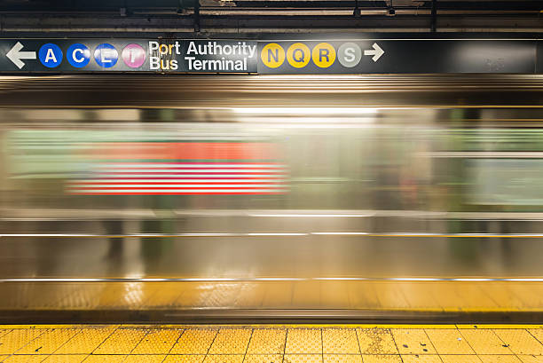

Urban time
my idea is use moving subway as background, when u click the subway u will go inside and see the clock showing in the subway;
Subway animation, the tracks move parallel to each other, and the carriages pass by like fragments of time
Rush Hour Timeline

🏠 Home